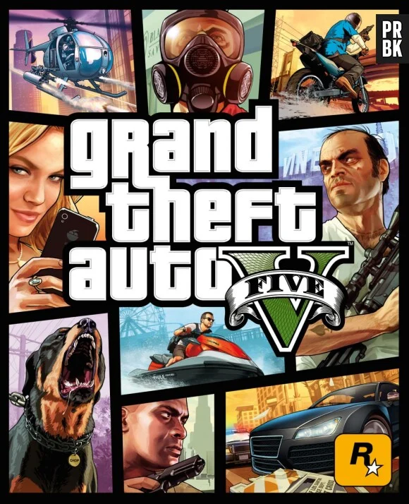
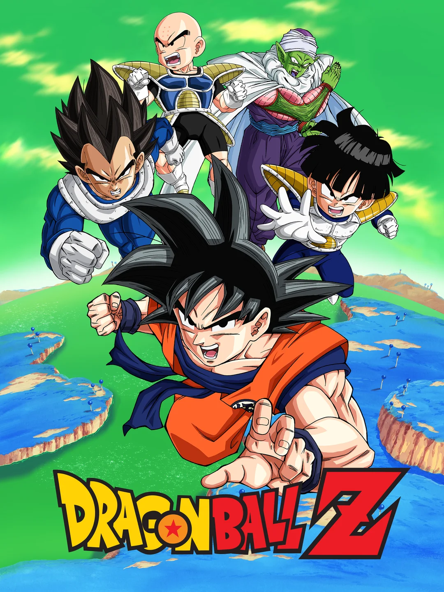

Alan 21 ans, Née le 09/01/2004. Son animal preferer est le "raton laveur comme un voleur". Il a un un CAP Vente
GTA V , Genshin Impact, Dragon Ball Xénoverse 2,
Dragon Ball , Food Wars, Konosuba, The rising of the Shield Hero, Akashic Records, Your Name, Roshidere,etc...